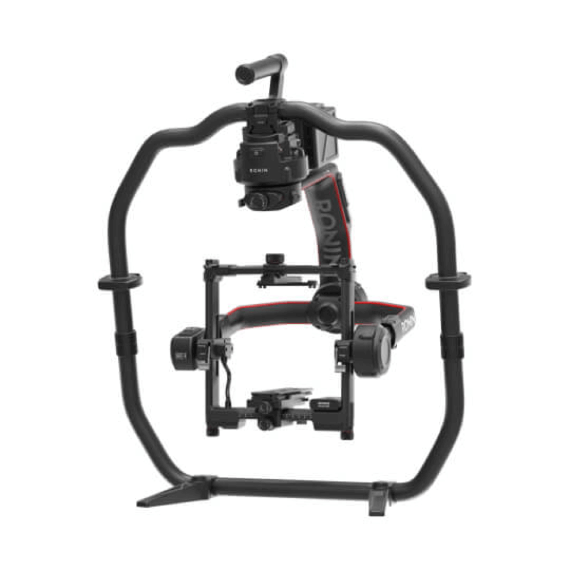

Cuando la cámara va en la punta de una grúa, sobre un coche o en un montaje donde no cabe un operador, quien mantiene el encuadre es la cabeza estabilizada remota. Es una de las piezas más importantes del material de grip moderno y, a menudo, la que decide si un plano en movimiento es utilizable. En K Grip trabajamos con dos: Movi XL y DJI Ronin 2. Explicamos qué hacen y cómo elegir.
Qué es una cabeza estabilizada remota
Es un sistema motorizado de tres ejes (panorámica, tilt y roll) que, gracias a giroscopios y sensores, mantiene la cámara nivelada y estable aunque el soporte se mueva, vibre o gire. A la vez, permite que un operador controle el encuadre a distancia, desde el suelo o desde dentro de un vehículo.
Esa doble función, estabilizar y operar en remoto, la convierte en la pieza central del russian arm, de las grúas y de muchos carmounts.
Cómo se opera
1. Volantes (wheels)
El operador mueve la cámara con dos volantes, como en una cabeza de grúa tradicional. Es el método preferido por muchos operadores de cine por su precisión.
2. Mimic o control gestual
Un mando que el operador mueve con las manos y que la cabeza “imita”. Es intuitivo y rápido de aprender.
3. Joystick
Control con palancas, útil para movimientos sencillos o ajustes finos.
En camera car, el operador de cámara va dentro del vehículo con su control y su monitor, y el foco lo lleva un ayudante con un sistema inalámbrico.
Movi XL: para paquetes de cámara pesados
El Movi XL de Freefly es una cabeza estabilizada de gran formato. Según el fabricante, admite cargas de hasta unos 22 kg (50 lb), gira 360° en panorámica y está pensada para vehículos, grúas, rigs de agua o aéreos.
Cuándo elegirla: cámaras de cine con ópticas zoom o pesadas, matte box, accesorios completos, y camera car a velocidad donde interesa margen de carga. En K Grip la montamos sobre el Motocrane Radical y sobre la grúa Scorpio.

DJI Ronin 2: versátil y más ligera
El DJI Ronin 2 admite según el fabricante hasta 13,6 kg de carga y puede trabajar en mano, sobre vehículo, en grúa, en trípode o en aéreo, con montaje normal o invertido (underslung). Es compatible con volantes y con sistemas de transmisión de vídeo.
Cuándo elegirla: configuraciones de cine medias, rodajes que alternan cámara en mano y montaje en grúa o coche, y planos donde se valora una cabeza más ligera. En K Grip la ofrecemos como DJI Ronin 2 PRO Pack y sobre el Motocrane Radical.
Movi XL vs Ronin 2
| Movi XL | DJI Ronin 2 | |
|---|---|---|
| Carga publicada | Hasta 22 kg aprox. | Hasta 13,6 kg |
| Peso de la cabeza | Mayor | Menor |
| Uso principal | Grúa y camera car con cámaras pesadas | Mano, grúa, vehículo y rigs |
| Ideal para | Publicidad de coches, cine de gran formato | Publicidad, videoclip y series |
Las cifras son las publicadas por cada fabricante. La carga real útil depende del equilibrado, de la velocidad y del tipo de movimiento, por eso conviene confirmar siempre la configuración completa antes del rodaje.
Cómo elegir la cabeza correcta
- Pesa el rig completo, no solo el cuerpo: óptica, matte box, motores de foco, transmisor y baterías.
- Piensa en la velocidad: a más velocidad y viento, más margen de carga conviene tener.
- Valora el soporte: grúa, camera car, carmount o mano condicionan el tamaño de cabeza.
- Pregunta por el control: si tu operador prefiere volantes o mimic.
Preguntas frecuentes
¿Qué es una cabeza estabilizada remota?
Un sistema motorizado de tres ejes que estabiliza la cámara y permite operarla a distancia con volantes, mimic o joystick. Se usa en grúas, camera car y montajes especiales.
¿Qué diferencia hay entre Movi XL y Ronin 2?
El Movi XL está pensado para paquetes de cámara más pesados, con hasta unos 22 kg según el fabricante; el Ronin 2 admite hasta 13,6 kg y es más ligero y versátil para mano, grúa o vehículo.
¿Qué cabezas tiene K Grip?
K Grip dispone de Movi XL y DJI Ronin 2, que se pueden montar sobre Motocrane Radical, grúa Scorpio o en otras configuraciones según el rodaje.